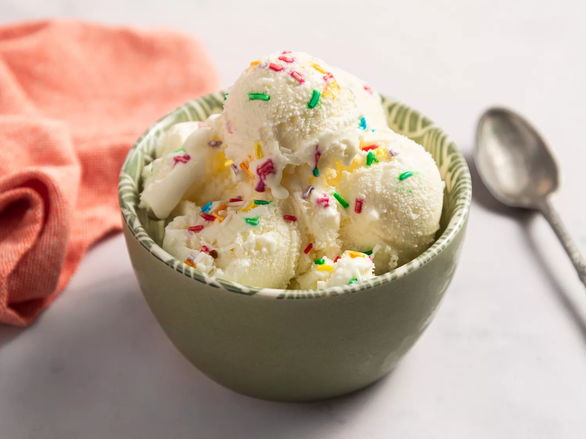

Homemade ice cream is easy to make with cream and sugar, and this old-fashioned vanilla ice cream recipe requires no cooking and no eggs. It's rich and creamy, and makes the perfect summer family treat!
Gather all ingredients.
Combine half-and-half, sugar, cream, vanilla, and salt in the freezer container of an ice cream maker.
Freeze according to the manufacturer's instructions, about 20 minutes.
Transfer to an airtight container and freeze until firm, about 4 hours.
Enjoy!